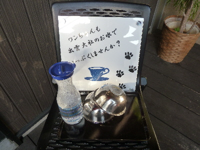
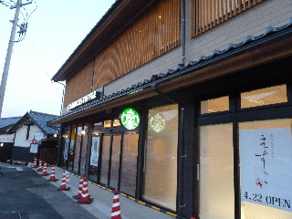
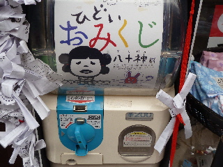
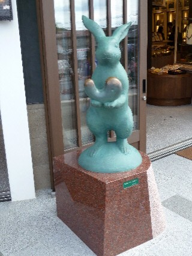
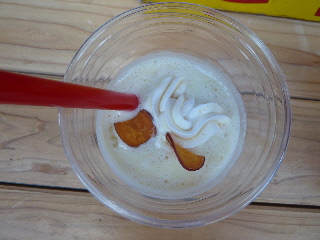

お蕎麦屋さんの一福で、ペットのお水がありました。
2017/01/28
ペットを飼っていないので分からないですが、こうゆうのあるとなんかいいですね。

出雲大社の御水って言われるとなんかありがたい気分がしました。
ワンちゃんと散歩される方はどうぞ。
出雲大社門前町 表参道神門通り
2017/01/28
ペットを飼っていないので分からないですが、こうゆうのあるとなんかいいですね。

出雲大社の御水って言われるとなんかありがたい気分がしました。
ワンちゃんと散歩される方はどうぞ。
2014/04/06
何故か皆が期待しているスターバックスですが、4/22にオープンですって。

お店の前にオープンのポスターが貼ってありました。
お隣の「えすこ」ってお店も4/22openです。
2階建てで、1階が売り場で、2階が席みたいです。
正門出てすぐのいい場所なので、利用しやすそうです。
2014/03/09
出雲大社のご縁横丁で面白いガチャをみつけました。

ひどいおみくじです。
1回200円
おみくじにはひどい事が書いてあるようです。
そして、そうならないようにお守りの石が一緒に入っていました。
私はマイナスの力に作用されるから水晶で浄化しましょう！って水晶が入っていました。
パワーストーン付のおみくじって楽しくていいですね。
2012/10/08
そんなに久々に歩いたわけじゃないですが、神門通りは変わりましたね。
新しいお店が色々出来ていました。

お店屋さんの前に「幸せの勾玉」なるオブジェがありました。
なんかコレさわっておくと幸せになれそうな気分になりました。

山陰の食材「まるいち」でサツマイモのスムージーを買いました。
ちょっと変わってていいでしょ？
スムージーって言うとトロトロでアマアマなイメージなんですが、これはサラサラであっさり目でした。とってもヘルシーな感じでした。